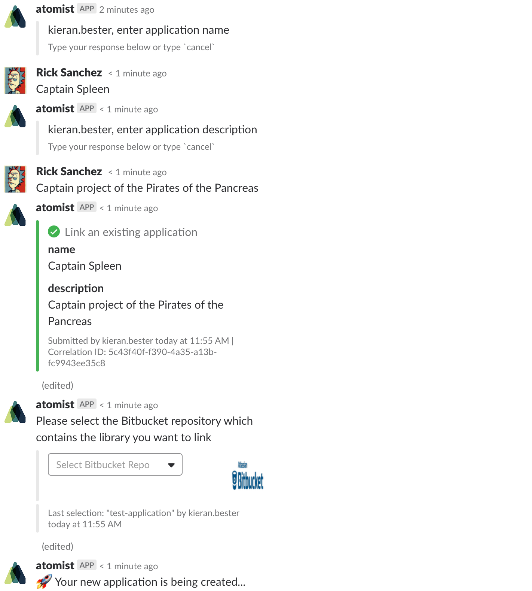

Add an Application
At this point in the guide you should have been presented with a prompt to link an existing application to your project. You should have arrived at this point through the conversational prompts presented after creating a project. Note that you can also link an existing application using the command below in your team channel
@atomist sub link application
For details on the use of this command please see here
Below is an example of linking the existing application to your project

The flow for adding an existing application is different to all the commands encounterd so far. First the prompts for an application name and description are shown. Enter these and submit them when you are satisfied with your values. Subatomic will then pull a list of all the repositories in your Bitbucket project and you can select which one is holds the source for the application you wish to use. Once you have made you selection you will be informed that your application is being provisioned.
Jenkins Build
The application should now be provisioned and you are presented with an option to kick off a build. Note that if your application did not have a Jenkins build file, Subatomic will generate one for you and add it to your application repository. The message should looks as below
Start the build by choosing the presented option. The jenkins build can also be start by using the command below in your channel
@atomist sub jenkins build
For details on the use of this command please see here
You should be notified that your application is now being built. The build is started using your Jenkins master instance in your DevOps environment. The link to your jenkins instance can be found in the DevOps environment and logging into the instance will then allow you to track/promote and deploy your builds.